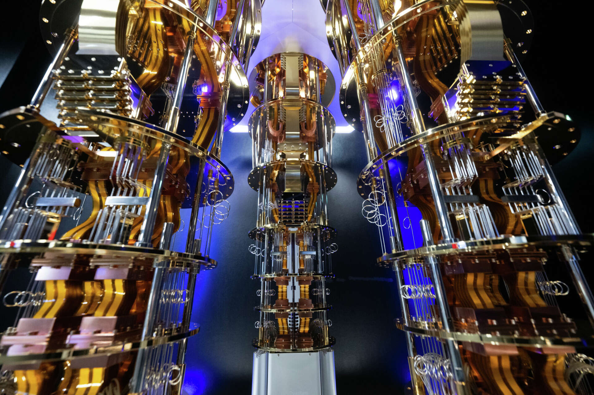

Email: YordyElvir@tecnico-honduars.com.com
Teléfono: + 504 32022531
Nombre Yordy Alexis Elvir Mencia
Grado y seccion III BTP Informática S"11"
Ubicación: Francisco Morazan, Honduras

Microsoft Majorana 1
A continuacion ams informacion sobre el procesador cauntico de microsoft majorana 1.
Pregunas mas preguntadas XD

¿Cuál es la principal ventaja de los qubits topológicos frente a los tradicionales?

¿Qué tipo de qubits utiliza el procesador Majorana 1?

¿Qué material innovador permite el funcionamiento de Majorana 1?